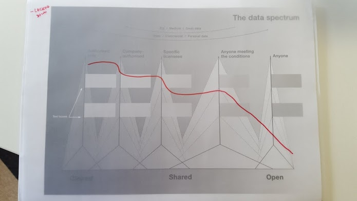
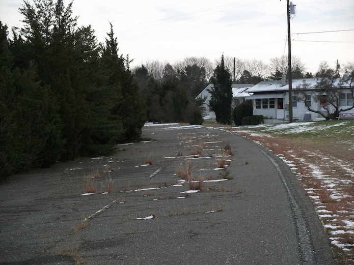

Comment: What would a locked-down data future look like?
This is the second in a blog series discussing potential data futures and how they affect data infrastructure. The first in the series outlines why we are considering three potential data futures
In this blog we consider a locked-down future, exploring how it might emerge and what it would mean for us, our data infrastructure, our environments, our businesses and our society.
The locked-down future maximises closed data and minimises open data. People and organisations choose to keep more and more data closed and do not allow others to access or use it. This is a choice made by the majority of society.
This future may emerge due to a growing data trust deficit existing in many countries, causing us to use more secure services that guarantee not to open or share our data.
There may be concerns about pieces of data that we thought secure being released and linked back to us or the ethically challenging uses that people find for our data. There may also be a deeper understanding of the risk of ever-easier reidentification, as more and more data is openly available. Due to hacks and misuse of data, our security fears increase and our trust decreases.
In the locked-down future, people demand that their data is locked as they lack trust in how it is being used. As a result, governments change legislation in ways that make it increasingly difficult to share or open data, reversing their movement towards openness and transparency.
These choices by individuals and governments in turn effect data users, such as those in academia or businesses. There is a ‘data drought’ as it is increasingly difficult to use data. The impact on reputation and revenues when data leaks occur are cataclysmic. Organisations tend to keep the data they hold closed, rather than share or open it to create new revenue streams or allow others to use it to create new services and insights. People, businesses and governments forget or ignore how many everyday services use open data and don’t recognise the trust and economic value that public and private sector open data creates. We lose access to many of the services that we currently use each day.
The data that we choose to share is minimal, but we still share some. Rather than openly publishing data, people choose to only share it in limited circumstances. For example, where direct care is provided by a medical professional, where government regulation requires access to the data, or because the remaining business-to-business data providers need it for their business models. Those data providers are likely to struggle, due to legal restrictions on sharing data, and a shallower pool of associated data with which to enrich their insights.
At this data future's extreme we could imagine legislation requiring individual informed consent for every secondary use of data. Will individuals have to give new consent every time their data is aggregated, or their data is transferred between companies, or every time an individual census return is analysed for a new purpose? How will that consent be given and tracked? Will data literacy rise to a point where informed consent is possible for every scenario? Will we be able to design services to assist individuals who cannot become data literate?
These are questions that society will have to answer to enable such legislation to work. If we cannot answer the questions then, in the locked-down future, the default position will be to keep the data closed in every circumstance. The data that we choose to make open for anyone to use for any purpose is small. There is little information that is many available publicly and freely by individuals, businesses or governments.
This is how we represent the locked-down future on the data spectrum:

In this future, the importance of data infrastructure is smaller, as so much data is closed.
The focus for data infrastructure in this future is to keep data closed and secure with a smattering of work to support shared and open data. Strong data infrastructure, although intended to make our data as widely used as it can be, will, to be blunt, fall short of its promise.
If we use the analogy of data and data infrastructure as roads then the road network will exist but it will be sparse. There will be some free highways for anyone to use, but if we were to travel the road network we would very quickly find our journeys interrupted by toll roads and gated communities. If we were to negotiate our way past these challenges we would then discover that many parts of the landscape were simply inaccessible. We might be able to see a community of people in the distance, but would have no way of getting to them. Eventually, people would stop using the road network. It wouldn't be worth the effort.
 An abandoned road in New Jersey. CC BY 2.0, uploaded by [Doug Kerr](https://www.flickr.com/photos/dougtone/5284046497/ “Doug Kerr").
As well as people and organisations choosing to keep their data closed, we should also think of those for whom there is no choice. A world of maximised closed data is similar to the current world for the billions of people who cannot or choose not to use digital services. Their data is closed because it is too difficult to discover it, share it or use it: the data exists but it is in paper and face-to-face interactions. Despite the amazing growth in internet access and the apparent ubiquity of smartphones, 25% of the world's population are still offline.
When the digitally excluded and the countries, cities and regions that they live in come online, will those societies choose the locked-down future or a different one? In the next article in this series we will discuss our second scenario – the paid future – and what might happen when people expect to be paid for their data.
Peter Wells is an Associate at the Open Data Institute. Follow @peterkwells on Twitter.
If you have ideas or experience in open data that you’d like to share, pitch us a blog or tweet us at @ODIHQ.